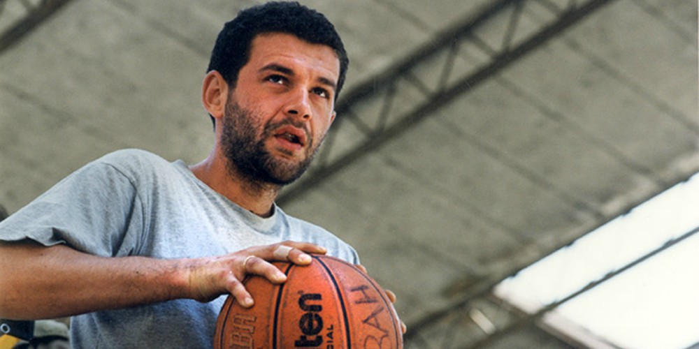
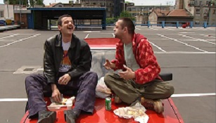
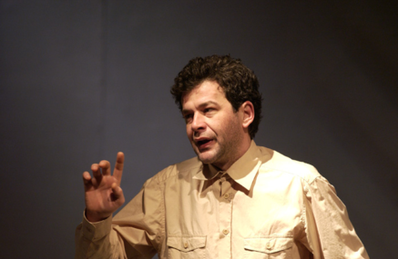

Током студирања добио је стипендију од Југословенског драмског позоришта, а своју глумачку каријеру започео је на другој години факултета, улогом у представи Велика пљачка, у режији Дејана Мијача, на сцени позоришта Атеље 212. У Југословенском драмском позоришту дебитовао је у представи Лажни цар Шћепан Мали.
Запажену улогу имао је у представи Тамна је ноћ, која је премијерно изведена 1993. године у Култ театру, доживела три стотине извођења, постала једна од најкомерцијалнијих представа и играла се на турнејама у Сједињеним Државама и Канади.
Године 1994. добио је улогу Фадила, војника ЈНА, у ратној драми Боре Драшковића Вуковар, једна прича.
Након што је скренуо пажњу на свој таленат, добио је улогу у филму редитеља Горчина Стојановића Убиство с предумишљајем (1995), у ком је тумачио лик Богдана, рањеног на ратишту у Босни, који са нестрпљењем чека опоравак како би се вратио назад. За ову улогу добио је награду за најбољу мушку улогу Цар Константин на Филмском фестивалу у Нишу.
Године 1998. заиграо је у ТВ серији Породично благо (1998—2002) у улози Златка Гавриловића, након које је стекао велику популарност.
У краткометражном филму Хотел Београд из 1998. године тумачио је лик Игора, а након тога заиграо и у филму Буре барута, редитеља Горана Паскаљевића. Исте године играо је у једној од главних улога у филму Спаситељ, где је тумачио Вериног брата, силоване Српкиње која је рат провела у заробљеничком кампу.Уследила је улога главног лика, Марка, у филму Рањена земља, чија радња се одвија у једном београдском склоништу током НАТО бомбардовања СРЈ. Године 2000. заиграо је у филму Небеска удица, где је тумачио лик Каје, младог и перспективног кошаркаша. На филмском фестивалу у Берлину, где је филм Небеска удица учествовао у главном програму, критичари су хвалили глуму Глоговца и поредили га са Џорџом Клунијем и називали га словенским Томом Хенксом.
Почетком 2001. године Глоговац је добио улогу у филму Муње!, где је тумачио улогу подмитљивог полицајца, који је склон лаким дрогама.
Исте године глумио је Тому, возача амбулантних кола у филму Нормални људи.
Године 2004. у улози таксисте Живца глумио је у филму Радивоја Андрића, Кад порастем бићу Кенгур, филму који је освојио награду Пропелер Мотовуна на Мотовунском филмском фестивалу.
У криминалном трилеру Клопка (2007), Глоговац је добио главну улогу, Младена, грађевинског инжењера, који на све начине покушава да заради новац, да би излечио свог тешко болесног сина. Филм је 2007. године добио награду за најбољи сценарио на Фестивалу филмског сценарија, награде на фестивалима у Минску, Милану и Лијежу, а Глоговац награду за најбољу мушку улогу у филму.  У филмској драми Хадерсфилд тумачио је улогу Ивана, бившег џудисте, који је прошао кроз серију психотичних епизода и лечења у менталним институцијама, пре него што се коначно крстио у Православној цркви. Поред тога што је имао једну од главних улога у овом филму, Глоговац је био и продуцент филма. За ову улогу добио је Статуету „Слобода” за најбољу мушку улогу на Филмском фестивалу у Сопоту и Гранд при „Наиса“, награду публике у Нишу, 2007. године. За улогу Ивана у позоришној представи Хадерсфилд, која је извођена широм Србије, у Сједињеним Државама и Канади Глоговац је добио Гран при за најбољу мушку улогу у Брчком, Награду Милош Жутић од стране Удружења ликовних уметника Србије, Статуету „Давид Штрбац” у Бања Луци и Награду Зоран Радмиловић, најбољем глумцу Фестивала за улогу Ивана, у Зајечару.
2008. године глумио је у серији Мој рођак са села у улози оца Милутина, у 15 епизода. Ту је снимљена и једна од емотивнијих сцена познатих широј публици. Њен садржај је, на жалост, обрисан са Youtube-a али је остао тонски запис са пригодном фотографијом.

Године 2015. у филму Енклава, који обрађује тему положаја Срба који су остали да живе на Косову и Метохији након 1999. године, Глоговац је добио улогу Војислава Арсића, сељака који живи на Косову и Метохији. Глоговац је значајну улогу остварио и у филму Радоша Бајића За краља и отаџбину (2015.), где је по други пут у каријери тумачио лик Драгољуба Михаиловића.
На прослави 70. година од оснивања Југословенског драмског позоришта, 3. априла 2018. године, додељена му је награда Добричин прстен и тако је постао први глумац који је ову награду за животно дело добио постхумно.